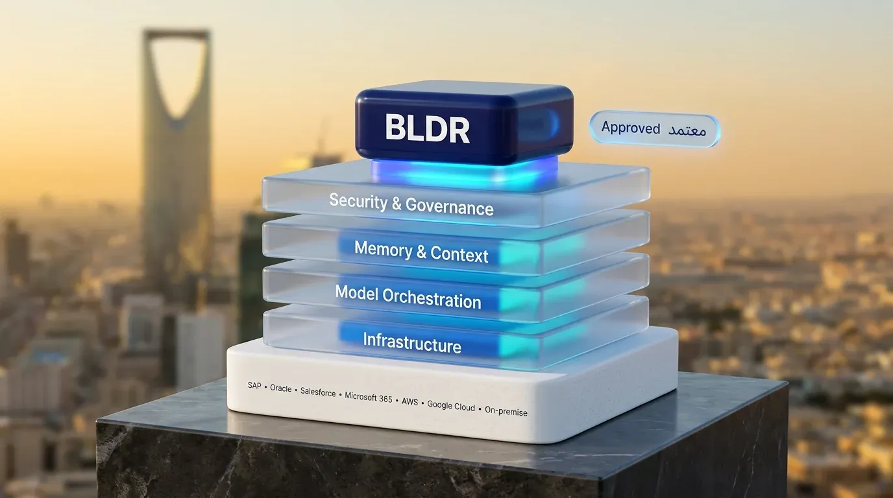
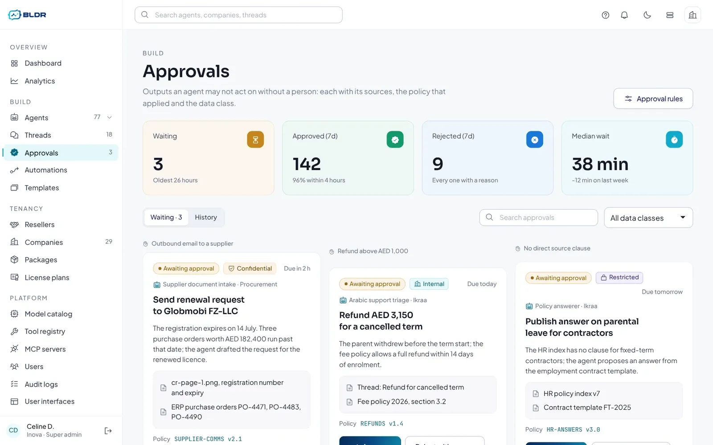
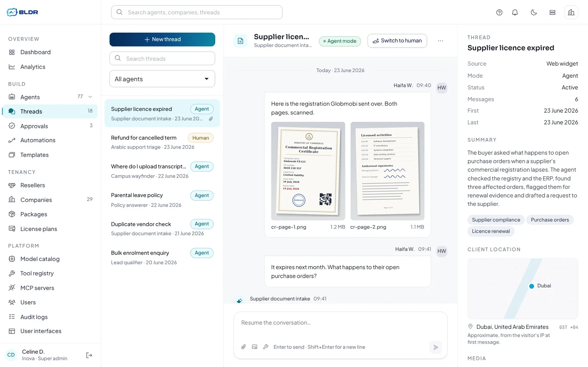

of executives say switching their primary AI vendor or model would be difficult.
IBM Institute for Business Value, The Calculus of AI Sovereignty, June 2026
Ready-made assistants on day one. Custom agents built for your systems. All governed in one place, running where you decide.
An enterprise deployment across SAP Ariba, SAP ERP and an on-prem ERP is underway in Saudi Arabia.

Built for the systems you already run
A handful of AI Overlords rent intelligence to enterprises by the token, on their servers, under their terms. They can change the rent, the rules and the locks whenever they like. That isn't a supplier. That's a landlord.
of executives say switching their primary AI vendor or model would be difficult.
IBM Institute for Business Value, The Calculus of AI Sovereignty, June 2026
AI-related disruptions in two years on average, mostly from vendor services.
IBM Institute for Business Value, June 2026
of finance leaders had AI cost overruns in the last 12 months.
DoiT survey by Sapio Research, February 2026
We'll ask the vendor.
We own our AI.
The model is a commodity. Ownership is the moat.
BLDR is one enterprise AI platform with three layers. Switch on the assistants, make them yours with your own knowledge, then build agents that do real work inside your systems.
Chat, voice and custom assistants, ready to switch on for staff and customers. No project, no wait.
Connect your documents, policies and data. Each assistant answers from what your organisation knows, with citations.
When the work needs more than answers, we build agents that act inside your systems, with model orchestration, approvals and a full audit trail.
One governed platform underneath. Gateway, approvals, human takeover, audit trail and model routing for every assistant and agent.
You choose where your AI runs: as a hosted service, or inside your own infrastructure. Every model call goes through the BLDR gateway: logged, filtered and approved by your policy, never by theirs.
Model residency is confirmed for each deployment in your security review.An agent drafts the action. A named person approves it before anything changes.
Anyone with the right role can step in and take over a thread at any point.
Every prompt, source, tool call, approval and outcome is logged and exportable.
Role-based access, separate workspaces and data that never crosses a boundary.
Data rules run before a model or tool sees anything, not after.
Route each task to an approved model by sensitivity and cost. Swap models without rebuilding agents.
Alignment and readiness, not certification. Our certification roadmap is in the security pack.
If the work runs through your systems, an assistant or agent for it can be built on BLDR. Here is where teams start.
Supplier checks, tender search, invoice matching
Lead qualification, proposal drafts, CRM updates
Content review, campaign reports, on-brand drafts
Onboarding, policy answers, leave and benefits
Invoice support, reconciliations, spend approvals
Chat and voice, case triage, Arabic and English
Internal support, access requests, incident summaries
Contract review, policy checks, audit evidence
Across industries: government, financial services, healthcare, education, telecom, energy and retail.
An enterprise deployment across SAP Ariba, SAP ERP and an on-prem ERP is underway in Saudi Arabia. Results will be published with our client's approval.


Sample console data: what BLDR is built to run. Not a named client's results.
Enterprise AI is bought by a committee. Each seat at the table gets its answer.
Start with one back-office workflow, priced as a deployment plus licences, measured from the first quarter. Not another pilot.
Licences per agent and automation, not per prompt. You know the bill before you sign.
BLDR connects to SAP Ariba, SAP ERP and your on-prem systems. No rip and replace.
Give your people a governed assistant they'll actually use, and the reason to go around IT disappears.
Dedicated, in-country deployment, a clear rate card and an exit clause. The paperwork is already written.
An assistant that knows your policies from day one. Agents take the repetitive steps; you approve, decide and take over whenever you want.
White-label BLDR, deliver it with us and keep the margin.
We look at your systems, your rules and the first workflow worth automating.
We map the workflow, the data and the approvals. Your security review starts here.
Assistants on your knowledge and one agent live on your systems, measured against today.
A dedicated BLDR in your environment. Our reference enterprise build took 16 weeks.
The procurement pack comes with it: security answers, data processing terms, rate card and partner routes.
Ask for the packYou choose. BLDR runs as a hosted service, or on-premise, in private cloud or in-country, and every model call goes through the BLDR gateway, where your policy decides which models may see which data. Model residency is confirmed for each deployment during the security review.
Only if your policy allows it. If you approve a cloud model for a task, the call goes through the BLDR gateway: logged, filtered and approved by your rules, never by the provider's. If you don't approve one, your data stays inside your environment.
Yes. BLDR has connectors to SAP Ariba (SLP and Sourcing), SAP ERP over RFC and on-prem ERPs over SQL. Agents read and act on your data where it already lives, so there is no rip and replace.
Chat, voice and custom assistants, ready to switch on. You customise each one with your own knowledge, your documents, policies and records, so it answers from what your organisation knows, with citations.
Yes. If the work runs through your systems, an agent for it can be built on BLDR. We design it with your team, integrate it with your systems, choose and orchestrate the models, and set the approvals and audit trail before it goes live.
An assistant answers and helps, in chat or by voice, from your knowledge. An agent does work: it reads documents, checks records in your systems, drafts the next action and waits for a person to approve it. On BLDR both are governed, logged and reversible by a human.
BLDR is built in alignment with ISO 27001, SOC 2 readiness, GDPR, Australia's Privacy Act and Saudi PDPL and NCA controls. Our certification roadmap is in the security pack, and we walk your team through the controls in place today.
Our reference enterprise build across SAP Ariba, SAP ERP and an on-prem ERP took 16 weeks. Most organisations start with one back-office workflow as a proof of value, then scale from there.
Yes. Arabic-first delivery is part of how BLDR is built, and one of the five agent patterns in our Saudi deployment turns Arabic master data into English records.
Pick a time. We'll show you the assistants working on your knowledge, map your first custom agent and walk your team through the gateway, the approvals and the audit trail.
The booking calendar loads here. If it doesn't, open it in a new tab.
Open the booking page